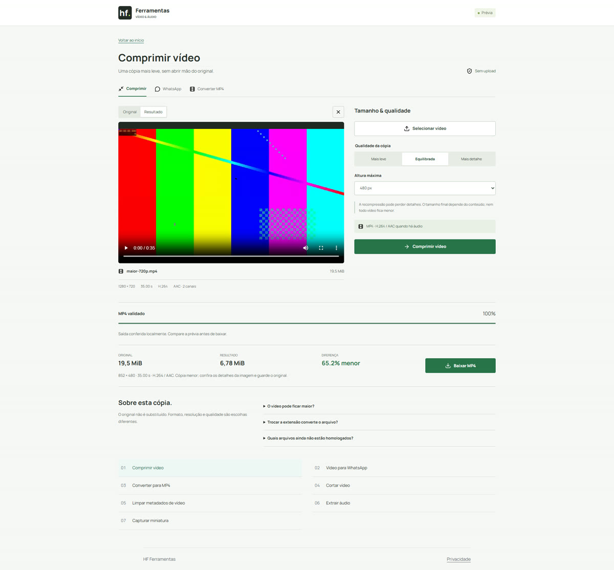

Tamanho & envio
Como preparar um vídeo para compartilhar
Reduza o peso quando necessário, baixe a cópia e confira no destino.
Escolha o que precisa chegar a quem recebe
Antes de reduzir, decida se a pessoa precisa ler uma tela, reconhecer um rosto ou apenas acompanhar a cena. Confira as exigências do aplicativo de destino; este portal não define seus limites nem garante que ele aceitará qualquer arquivo.
A ferramenta dedicada de envio foi retirada. O caminho atual é criar uma cópia em Comprimir vídeo, baixá-la e anexá-la manualmente no aplicativo escolhido. O portal não acessa sua lista de contatos e não envia o vídeo por você.
Prepare e baixe a cópia
- Abra Comprimir vídeo e escolha o original em Selecionar vídeo.
- Comece com Qualidade da cópia em Equilibrada e Altura máxima de 720 px. Use 480 px apenas se os detalhes continuarem suficientes.
- Clique em Comprimir vídeo. Aguarde a validação e compare os tamanhos medidos de Original e Resultado.
- Reproduza o resultado com som, use Baixar MP4 e anexe essa cópia no aplicativo de destino.
{kind=link}

Confira o arquivo que realmente chegou
Abra a cópia baixada, não apenas a prévia no site. Depois do envio, confira a versão recebida: alguns destinos modificam o arquivo. Compare orientação, textos pequenos, duração e áudio.
Um teste no Chrome/Windows não certifica todo celular ou aplicativo. Para uma gravação importante, faça primeiro um envio de teste e confirme a reprodução no aparelho que vai receber. Guarde o original separado da cópia.
Se continuar grande ou perder detalhes
Se o resultado não ficar menor, o portal informa isso. Volte ao original e experimente Mais leve ou uma altura menor; não recomprima repetidamente a mesma cópia. Se apenas parte da gravação for necessária, Cortar vídeo permite escolher um intervalo.
Não há meta automática de tamanho nesta versão. A entrada é limitada a 32 MiB, dois minutos e até 1080p/60 fps, conforme o suporte do navegador. Arquivos maiores exigem outro fluxo, sem tentar contornar o limite renomeando o arquivo.
Escopo da verificação
Procedimentos conferidos nos controles atuais e testes locais do Chrome/Windows. Viewports mobile são emulados; aparelhos físicos e outros navegadores não estão homologados. Exemplos e capturas são do projeto, com amostras sintéticas ou autorizadas, sem dados de visitantes.
Fontes técnicas
Referências da implementação. Resultados numéricos e limites do portal vêm dos testes locais, não de uma garantia das fontes.